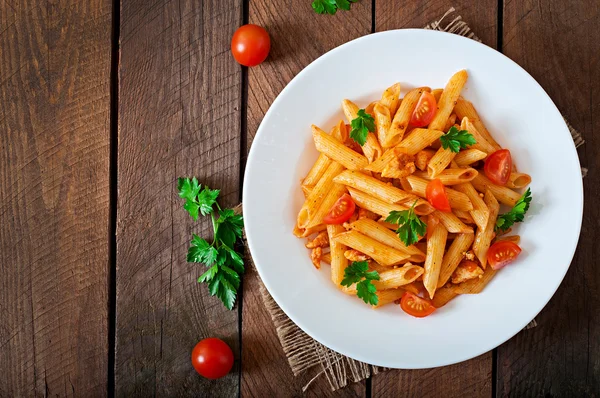

Pasta

Cheese likes to be with pasta
Romantic relationship are cool, but have you heard of mac and cheese?
The taste that is unforgettable
Ingridients
- 3/4 cup Penne Pasta or any Pasta
- 1/2 teaspoon Salt
- 4-5 cups Water
- 1/2 teaspoon Oil
- 1/4 cup chopped Carrot
- 1/4 cup chopped Green Capsicum
- 1/4 cup chopped Red Capsicum
- 1/4 cup chopped Broccoli
- Salt to taste
Directions Checklist
-
Boil raw pasta according to the instructions given on the package or follow following
instructions; Take 4-5 cups water in deep sauce pan, bring it to boil over medium
flame. When it start boiling, add 3/4 cup Penne pasta and 1/2 teaspoon salt.
-
Boil them until al-dente (cooked but not very soft). It will take around 10-12 minutes.
To check whether pasta is cooked or not, take one pasta in a fork and bite it.
If it is little firm to bite, it is cooked. If it is too hard to bite, it requires
more cooking.
-
Transfer cooked pasta to a large colander and drain excess water.
-
While pasta is cooking, heat 1/2 teaspoon oil in a pan or kadai over high flame. Add
1/4 cup chopped carrot, 1/4 cup chopped green capsicum, 1/4 cup chopped red capsicum,
1/4 cup chopped broccoli and salt.
Return to Home
Return to top